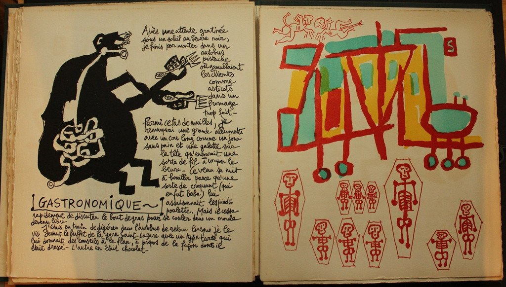
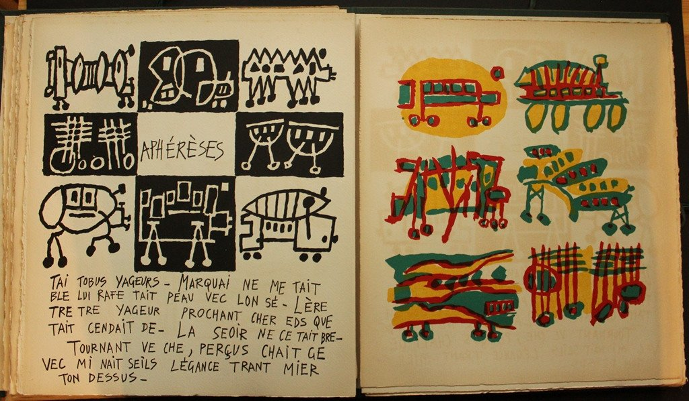

a HTML file with the structure
a CSS file with the styles
images as files (local or online)
Browsers will read the HTML, yank the needed parts and combine them to render the final page
However, we are responsible for preparing the files and linking them up.
personalised CSS styles make pages come alive and create the visuals
Even though embedding style into HTML is permitted, we keep them segregated on the CSS
hero background images (with tiling)
on-image titles, but need well-designed fonts
Example: pages from R. Quenau’s works that underline the visual element of reading/communicating
 
Printed material is normally for reading from start to finish
The table of contents allows skipping ahead on some parts
In textbooks, numbered definitions, figures and formulae allow mentioning them in the text and also go back to revise content.
Bibliographic references integrate the material and support different level of reading
Narratives might not follow the exact time sequence
HTML supports the hypertext:
parts of the text are connected to arbitrary texts, be them parts of the same text (backward or forward) or external sources
users can follow up the links and continue reading there (or come back)
virtually-infinite reading patterns are possible
CSS will program the graphics of the linked text
By clicking we ‘get there:’ browsers acquire the new page, build up and serve it
Opens in a separate tab
Same syntax for internal and external reference
Local files are searched from the local folder, as with CSS:
The https protocol assigns a computer (server) of reference for [www.w3.org]
on that computer, local software serves https requests and has a special folder, called root where it stores public files (HMTL, CSS etc.)
unless the link specifies a file, index.html will be served: www.w3.org/ is equivalent to www.w3.org/index.html
Embed the image inside the anchor
Audio/Video embedding is done with a third-party software that browers inject in the page
Maps are treated similarly
Pro: we have control of what to play
Con: very brittle
Pro: works well
Con: as with online images, we lease control of some parts of our page.
A special case of Video, today audio is almost always disallowed
Embed a clickable YT video in your Lorem page
In the same vein, can you embed a Google Maps reference?